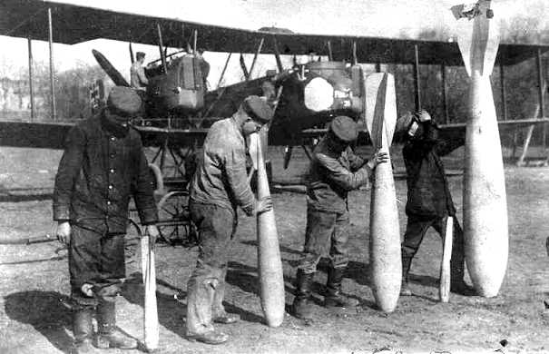
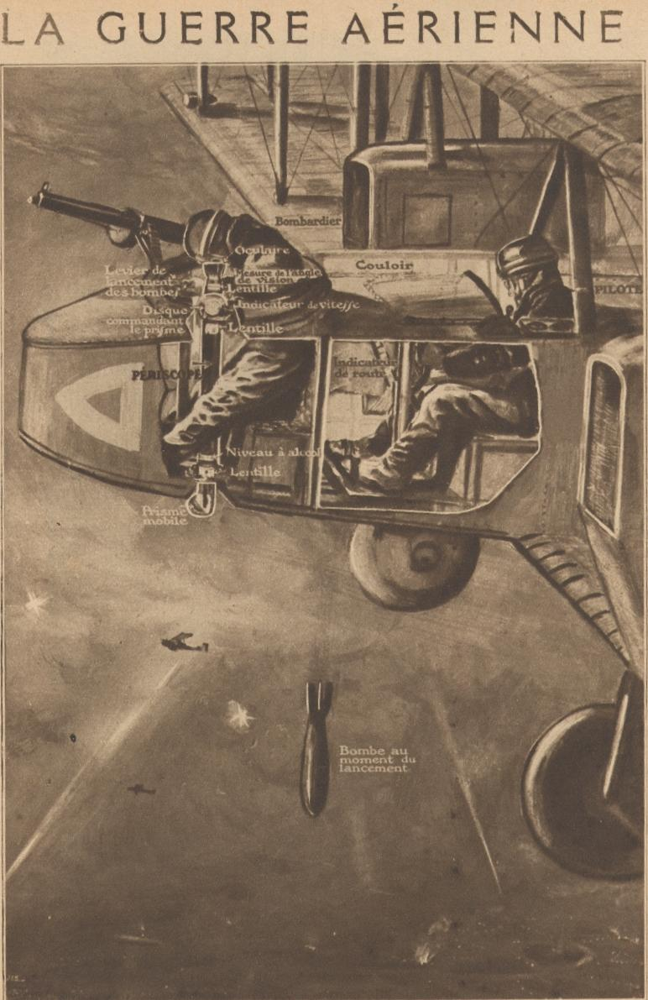
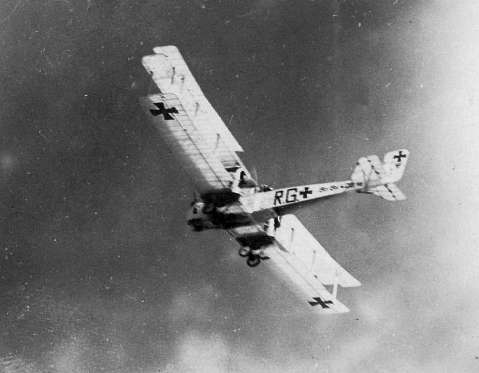
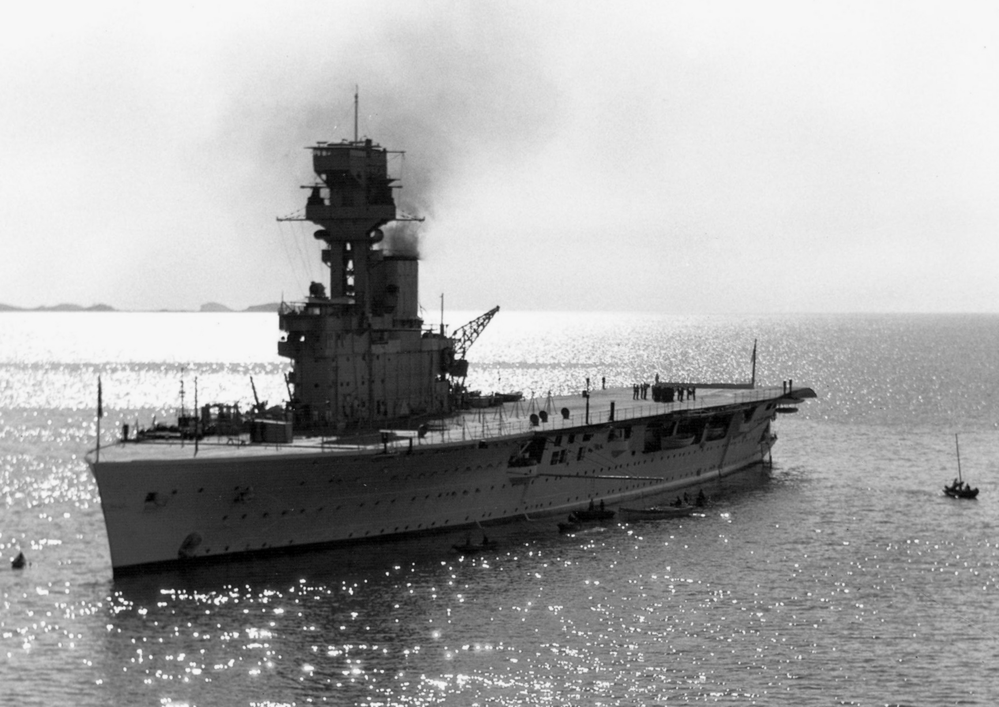
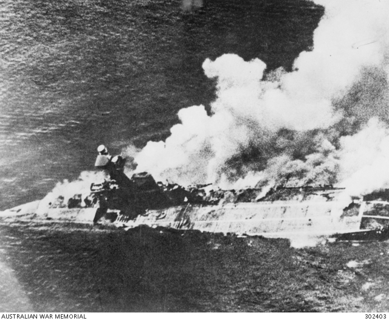
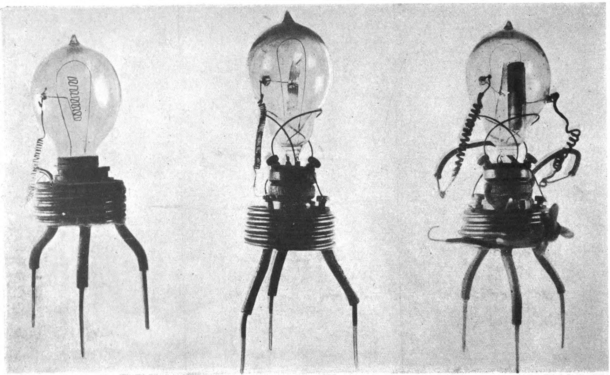
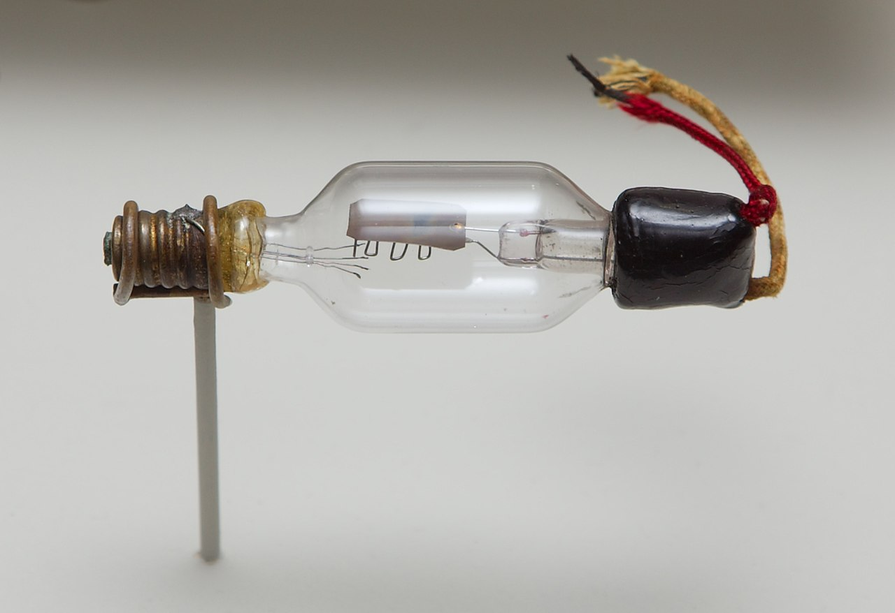
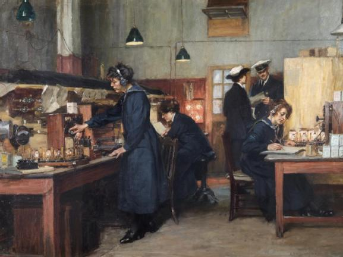
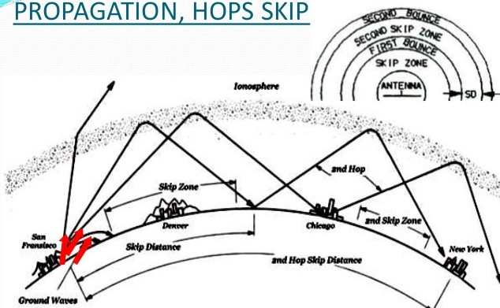

레이더 개발 이야기 (4) - 로열 네이비, 레이더에 눈을 뜨다
게시: 2022-10-06T06:30:04+09:00
<로열 네이비를 싫어한 로열 에어포스> WW1 중 1916년 5월 말의 유틀란트 해전에서 당시 세계 최강이던 로열 네이비를 상대로는 역시 답이 나오지 않는다는 것을 확인한 독일은 하늘에서 길을 찾음. 우월한 성능의 Gotha 폭격기를 이용해 1917년 6월 13일 백주 대낮에 런던을 폭격한 것. 당시 영공 방어를 담당하던 육군항공대의 비행단에서 총 92대의 전투기들이 날아올라 고타 폭격기들을 막으려 했으나 그 중 일부만 고타 폭격기에게 총격을 가할 수 있었을 뿐 대부분은 고타 폭격기에게 접근하지도 못함. 이 공습으로 런던에서는 총 162명의 사망자와 432명의 부상자가 발생.
  
(런던을 대낮에 폭격한 독일 폭격기, Gotha G.IV.)
독일군의 고타 폭격기들은 전쟁의 방향을 바꾸지는 못했으나 영국의 군 편제는 바꿈. 이 폭격 사건에 충격을 받은 영국군 수뇌부는 여기저기에 분산되어 있던 육군항공대 (Royal Flying Corps)와 해군항공대 (Royal Naval Air Service)를 통합해서 세계 최초의 육해군으로부터 독립적인 공군 (Royal Air Force)를 1918년 4월 1일 창설. 영국의 특성상 WW1 개전 초기만 해도 육군항공대보다 해군항공대가 규모면에서 압도적으로 더 컸었음. 그러나 전쟁이 장기화되면서 프랑스 전선에 투입된 육군항공대가 크게 증강되며 전쟁 말기에는 육군항공대가 훨씬 커졌으며, 공군 창설도 육군 출신인 Jan Smuts와 David Henderson가 주도. 그러나 WW1이 끝나면서 로열에어포스는 참혹한 수준으로 감축되었고, 그나마 1924년 로열 네이비가 (순양함을 개조한 것이 아닌) 항모로 설계되고 건조된 세계 최초의 항공모함 HMS Hermes를 취역시키면서 해군과의 긴장이 고조. 로열 에어포스는 그렇게 항공모함에 탑승할 비행단을 Fleet Air Arm라는 이름의 별도 조직으로 분리해서 운용했으나, 다른 나라의 해군 조직을 고려하면 언제까지 Fleet Air Arm이 공군 소속일지는 매우 불안불안한 분위기. (실제로 WW2 직전인 1939년 5월 24일, 결국 Fleet Air Arm은 공군에서 떼어져 해군으로 넘어감.)

(HMS Furious 같은 항모는 순양함을 개조한 것이지만, 이 HMS Hermes는 설계부터 완전히 항공모함으로 설계된 것이고 이것이 세계 최초의 모태 항공모함)

(그러나 이 세계 최초의 항모 HMS Hermes는 1942년 4월, 실론 섬 남쪽에서 일본 항공기에 의해 격침...)
그래서 1930년대 초 로열 에어포스는 로열 네이비와 좀 불편한 사이였음. 그러던 1935년, 로열 네이비의 Royal Navy Signal School (RNSS)에 웬 공군 연구소 소속의 연구원 하나가 찾아옴. 겉으로는 전리층(ionosphere)을 이용한 송수신 연구를 하는데 도움을 얻으러 왔다는데 아무래도 뭔가를 감추는 것 같았음. 이 공군 연구원은 과연 누구?
<로열 에어포스가 로열 네이비를 찾아간 사연> 고주파의 전파를 생성하고 그 반사파를 포착하고 증폭시켜 해석하는 것이 레이더의 기능인데, 그 모든 것에는 진공관이 필요. 그런데 영국 공군이 극비리에 레이더를 개발하고 있던 1935년 당시에는 (당연히) 레이더라는 물건이 없었으니 그에 필요한 수준의 고전압 진공관도 없었음. 물론 당시에 이미 진공관은 있었으나 상업적으로 구할 수 있었던 것은 통신용 저전압용 진공관 뿐. 이런 것으로 레이더를 운용해보니 필라멘트가 너무 쉽게 홀라당 타버림. 아무리 진공관은 소모품이라지만 너무 빨리 타버리니 교체하느라 죽을 맛.
원래 진공관은 이미 1904년 영국의 대학교수이자 마르코니 무선회사의 자문이던 John Ambrose Fleming이 발명했는데, 그 이유는 미약한 전파 신호를 증폭시켜 대서양을 사이에 두고도 무선 통신을 가능하게 하기 위한 것. 다만 플레밍이 만든 초기 진공관은 제어를 위한 grid가 없는 단자 두개짜리 다이오드(diode)였는데, 이게 실용적으로 된 것은 1907년 미국 엔지니어 Lee de Forest가 만든 단자 3개짜리 트라이오드(triode)부터. 이 트라이오드는 별도의 전류가 흐르는 얇은 전선으로 된 grid를 이용해 음극과 양극 사이의 전자 흐름을 제어할 수 있었음. 이 진공관 특허권을 놓고 플레밍과 디 포레스트와 마르코니 무선회사는 길고 치열하고 지루한 특허권 소송을 치렀음.

(플레밍이 처음 만든 다이오드. 다이오드(diode)라는 명칭이 무색하게 다리는 2개가 아니라 3개.)

(1908년 디 포레스트가 만든 트라이오드 진공관. 진공관 속 맨 위의 금속판이 양극(anode), 그 밑의 종이클립 모양으로 구부러진 전선이 제어용 grid. 원래 그리드 밑에 얇은 전선, 즉 필라멘트가 음극(cathode)로 있어야 하는데 이 골동품에서는 없음. 이유는? 역시 결국 타서 없어졌기 때문.)
그러다보니 1935년 로열 에어포스가 고전압 진공관을 구하기 위해 손을 벌리기 가장 좋은 곳은 바로 군함용 무선통신장치를 연구하던 포츠머스 Royal Navy Signal School (RNSS, 해군 통신학교). 여기서는 다양한 무선 통신 기술 및 탐지 기술을 연구하느라 온갖 진공관을 직접 연구할 뿐만 아니라 제조도 했고 심지어 이미 타버린 진공관을 수리까지 했음. 다만 레이더는 너무나 극비 프로젝트였으므로 로열 에어포스에게 영국 육군에게는 물론 로열 네이비에게조차 비밀로 했음. 그래서 레이더 연구를 주도하던 영국 공군 전파 연구소의 젊은 연구원 Arnold Wilkins는 이러이러한 사양의 고전압 진공관을 만들어 달라는 부탁을 위해 해군 통신학교를 찾아갔을 때, '왜 이런 고전압 진공관이 필요하냐'고 묻는 해군 통신학교에게 전리층(ionosphere)을 이용한 송수신 연구를 한다고 둘러댐.

(1919년 그려진 Royal Navy Signal School에서의 valve 테스트 장면. 영국 영어에서는 지금도 진공관을 valve라고 부름.)

(고딩 때 배운 기억이 나는데 원래 전리층에 전파가 반사되기 때문에 그로 인해 유럽에서 쏜 전파가 대서양을 건너 미국까지 닿는 것)
그러나 해군 통신학교 사람들도 단순한 땜쟁이가 아니라 매우 똑똑한 연구원들이었음. 뭔가 수상하다고 생각하고 공문 보내라고 함. 결국 공군은 해군 측에게 공식적으로 진공관 엔지니어링 지원 요청을 했는데, 그 과정에서 결국 이 연구의 목적이 레이더를 만들기 위함이라는 것이 로열 네이비 수뇌부에게까지 알려지게 됨. 결국 로열 네이비 연구소에서는 Charles Wright를 공군 레이더 연구팀에 파견하여 이것들이 뭘 하자는 것인지 둘러보게 함. 로열 에어포스에서도 이 무렵엔 포기하고 라이트에게 모든 것을 공개. 라이트는 공군이 연구하던 레이더를 보자마자 '이건 항공기보다는 군함을 찾는데 딱이네'라고 확신. 해군에서는 즉각 독자적인 레이더 연구에 착수하기로 하고 통신학교 내에 연구팀을 만들라고 명령. 해군 수뇌부가 공군에서는 연구원 수십명이 붙어서 레이더를 만들고 있으니 해군에서도 비용을 아까지 않겠다며 "레이더 연구팀 만드는데 몇 명이나 더 필요하니?"라고 묻자 패기 넘치는 해군 통신학교에서는 "연구원 한 명과 조수 한 명, 이렇게 2명 더"라고 답변. 그러나 '허접하고 근본없는 공군놈들이 하는 짓거리 쯤이야'라며 시작한 이 해군용 레이더 개발은 시작하자마자 공군과는 다른 벽에 부딪혔는데 그건 바로....